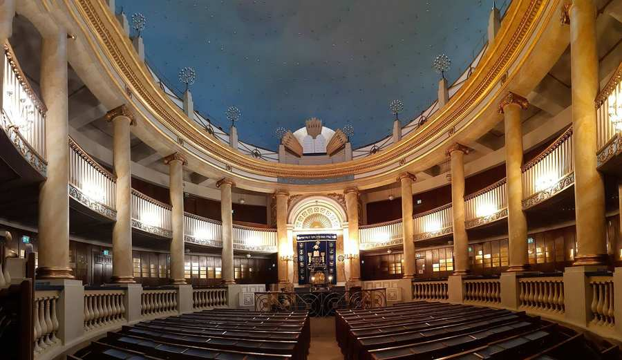
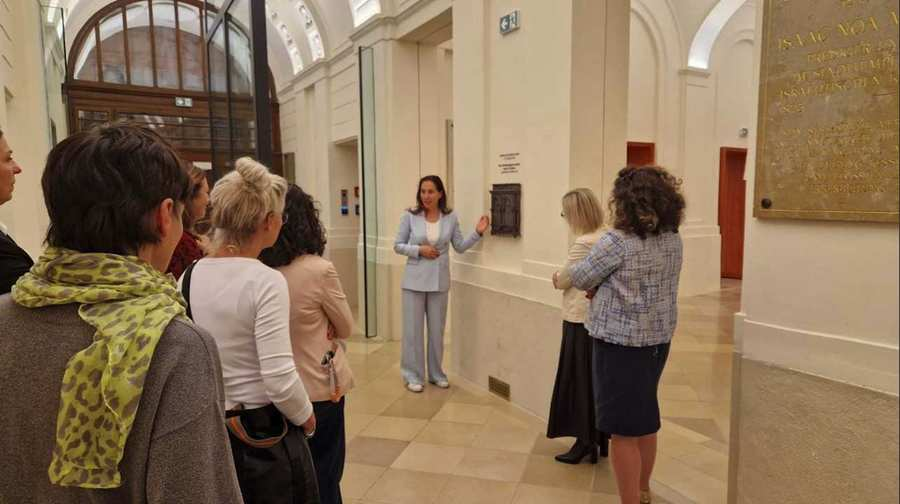
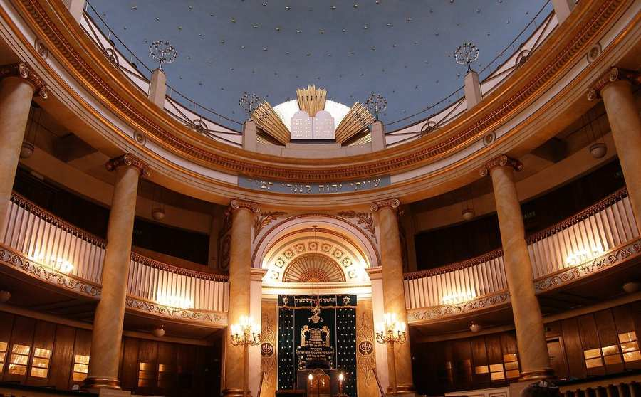
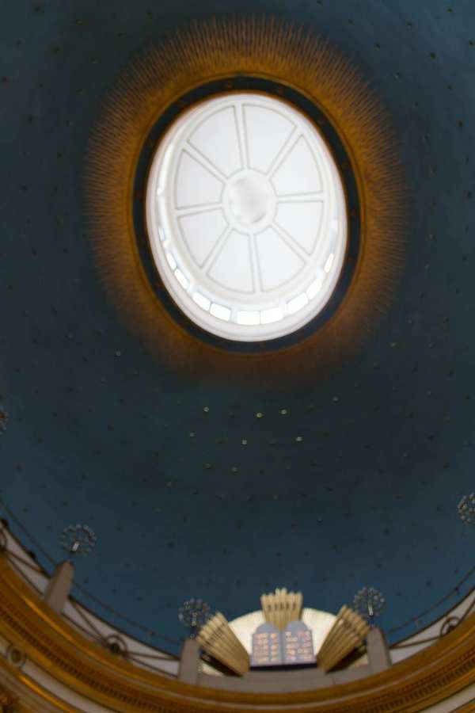
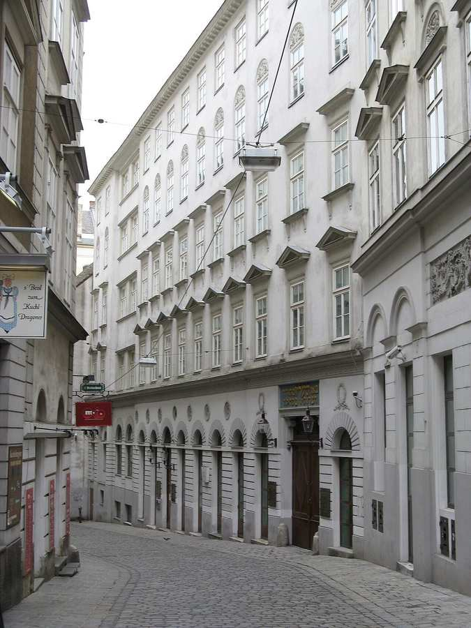
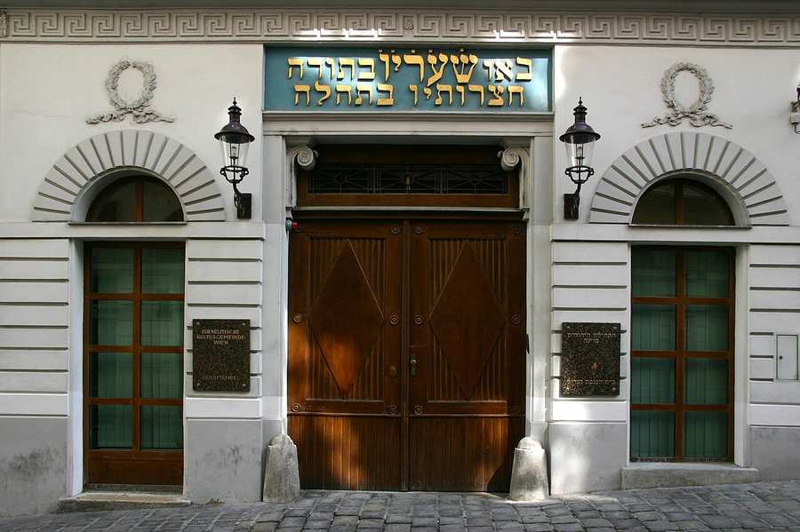

11נוב׳19:00
פרטים

סרטון רקע מהאתר הרשמי של IKG Wien, ikg-wien.at. תמונת סטילס: צילום היסטורי של בית הכנסת המרכזי לפני השיקום והשיפוץ ב־2025/26. צילום: Bic, CC BY-SA 4.0, דרך Wikimedia Commons.
- כמעט 8,000
- חברי הקהילה היהודית של וינה
- כ־12,000
- יהודים ויהודיות חיים בווינה
- 1826–2026
- 200 שנה לבית הכנסת המרכזי של וינה
- יותר מ־25,000
- אנשים שליקרת הגיעה אליהם ביותר מ־1,050 מפגשים
חדשות מהקהילה

Light of Hope 2026: אנחנו כאן. אנחנו נשארים כאן. ואנחנו מעצבים את עתידנו.
ב־9 בנובמבר הזמינה מחלקת הנוער של הקהילה לאירוע Light of Hope השנתי. לזכר פוגרום נובמבר 1938 הוקדש הערב כולו לעבר, להווה ולעתיד של החיים היהודיים בווינה.
להמשך קריאה
טקס זיכרון לפוגרום נובמבר 1938
ביום שני, 9 בנובמבר 2026, התכנסו נציגים בכירים מעולם הפוליטיקה, הדיפלומטיה והקהילה היהודית באתר ההנצחה "חומת השמות" לזכר השואה בפארק אוסטריכי בווינה.
להמשך קריאה
סיוע לחנוכה 2026: נר אחד מדליק את הבא
שובר מזון בסך 200 אירו לאדם לחברי קהילה במצוקה – תרמו עכשיו או הגישו בקשה עד 16.11.
להמשך קריאה
משתתפי ליקרת בסמינר המנהיגות הבינלאומי "First Step 2026" בבודפשט
בין 22 ל־25 באוקטובר השתתפו חניכי וחניכות ליקרת בסמינר המנהיגות הבינלאומי "First Step" בבודפשט.
להמשך קריאה
כשמשחק הופך למפגש: ליקרת ב"המשטרה משחקת איתנו"
מה קורה כשחניכי ליקרת פוגשים שוטרי שכונה? התשובה: משחקים מרתקים, שאלות פתוחות ומפגשים בגובה העיניים.
להמשך קריאה
מירנה פונק מרגשת עם הרומן החדש שלה "בלגן"
ערב ספרות מוצלח ומעורר השראה ב־ZiB: הסופרת רבת המכר מירנה פונק הציגה ב־22 באוקטובר בבאדן את הרומן החדש שלה "בלגן".
להמשך קריאה
השתלמות משותפת לצוותי בתי הספר היהודיים
גם השנה ארגנה ועדת החינוך השתלמות מורים משותפת לכל בתי הספר.
להמשך קריאה
ליקרת 2027: מחזור חדש, משימה משותפת
מחזור ליקרת החדש יצא לדרך בסקרנות רבה, בפתיחות ובאווירה טובה. הסמינר הראשון הוקדש בעיקר להיכרות הדדית.
להמשך קריאהלחוות את וינה היהודית

צילום היסטורי, לפני השיקום והשיפוץ ב־2025/26. צילום: Dnalor 01, CC BY-SA 3.0 AT, דרך Wikimedia Commons.
השיקום והשיפוץ של בית הכנסת המרכזי
בשנת 2026 חוגג בית הכנסת המרכזי, שנבנה בידי יוזף קורנהויזל, 200 שנה להיווסדו. מטרת השיקום והשיפוץ היא לשמר את המרכז הרוחני וההיסטורי־תרבותי הזה של יהדות אוסטריה ולהכין אותו לעתיד.
"חזרנו הביתה. בית הכנסת המרכזי היה סגור, אך חיי הקהילה שלנו מעולם לא נסגרו. על כך שאנו מתפללים כאן שוב היום אנו חבים תודה לרפובליקה של אוסטריה, לעיריית וינה ולמאות תורמות ותורמים מהקהילה ומחבריה בארץ ובחו"ל. הם לא רק שימרו מבנה – הם השקיעו בעתידה של וינה היהודית." נשיא הקהילה אוסקר דויטש, בטקס הפתיחה המחודשת ב־9 בספטמבר 2026
נפתח מחדש ב־9 בספטמבר 2026
יומיים לפני תחילת החגים פתחה הקהילה היהודית מחדש, בטקס חגיגי, את מרכזה הרוחני ברחוב זייטנשטטנגאסה לאחר עשרה חודשים וחצי של עבודות. בית הכנסת נחנך מחדש בהכנסת ספר תורה חדש, שהובא בתהלוכה חגיגית מכיכר היהודים (יודנפלאץ) לבית הכנסת המרכזי. שם חגגו כ־450 חברי קהילה את הפתיחה המחודשת.
- בית הכנסת המרכזי הוא המרכז הרוחני של הקהילה היהודית בווינה ובית הכנסת הגדול באוסטריה. זהו בית הכנסת הווינאי היחיד ששרד את פוגרום נובמבר 1938.
- עלות השיקום והשיפוץ היא 10.5 מיליון אירו. שליש מגיע מהממשלה הפדרלית, שליש מעיריית וינה ושליש מתרומות פרטיות. כ־95% מהעלות הכוללת כבר גויסו.
- בין היתר בוצעו עבודות אבטחה ובטיחות אש, הנגשה וארגון מחדש של אזורי הכניסה. הבימה וכל המשטחים הותאמו בנאמנות למקור. העבודות בוצעו בידי KENH Architekten בתיאום הדוק עם הרשות הפדרלית לשימור אתרים והמחלקה הטכנית של הקהילה.
- התפילות מתקיימות שוב באופן סדיר בבית הכנסת המרכזי. סיורים מודרכים יוצעו החל מחורף 2026. בשלבים הבאים ישופצו מרכז הקהילה וחזית בית הכנסת.

הכיפה בגוון הכחול המוכר. צילום היסטורי, 2014, לפני השיקום ב־2025/26. צילום: Hirut55, CC BY-SA 3.0 AT, דרך Wikimedia Commons.

רחוב זייטנשטטנגאסה, מושב הקהילה ובית הכנסת המרכזי. צילום: Yair Haklai, 2010, CC BY-SA 3.0, דרך Wikimedia Commons.
Likrat
בני נוער יהודים מבקרים בבתי ספר כדי לענות על שאלות ולהתמודד עם דעות קדומות.
בני נוער יהודים בגילאי 14 עד 18 עוברים הכשרה מקצועית בסדנאות ובסמינרים. הם רוכשים מיומנויות בתחומי הדת, ישראל, ההיסטוריה היהודית, השואה, רטוריקה, תקשורת ודינמיקה קבוצתית. בתום ההכשרה הם מבקרים בבתי ספר כדי לנהל עם תלמידים לא־יהודים בני גילם דיאלוג פתוח על היהדות, לענות על שאלות ביקורתיות ולהתמודד עם דעות קדומות.
עד כה הוכשרו יותר מ־200 חניכי וחניכות ליקרת, שהציגו את היהדות ליותר מ־25,000 אנשים ביותר מ־1,050 מפגשים ותרמו להבנה הדדית בדמוקרטיה שלנו.
מאז 2015 ליקרת מסמלת חילופי דברים פתוחים, שיתוף פעולה בר־קיימא ודיאלוג חי.
שירותים ומוסדות
הקהילה היהודית של וינה היא הקהילה המאוחדת של כל זרמי היהדות בווינה. היא משמרת את המורשת היהודית ומעצבת את העתיד היהודי באוסטריה.
שירות לחברים
הכתובת המרכזית לקבלה לקהילה, אישורי רישום, דמי חבר ושינוי פרטי חברים. דמי החבר השנתיים עומדים כיום על 240 אירו, או 20 אירו לחודש.
לשירות לחבריםתמיכה: רווחה וצדקה
הקהילה וחבריה שואפים לקדם את רווחת חברי הקהילה, גם במצבים קשים. תמיכה היא עמותת הרווחה של הקהילה לסיוע לנזקקים.
לתמיכהעזרה שכונתית
פרויקט חברתי של הקהילה: מתנדבות ומתנדבים מסורים שעומדים לצד אחרים בזמנים קשים – מעזרה בקניות ושיעורי עזר ועד ליווי לתורים אצל רופא. אפשר להתנדב כבר מגיל 16.
לעזרה השכונתיתהרבנות
כאן תמצאו את פרטי הקשר של הרבנות וכן מידע שימושי על אוכל כשר ושירותים נוספים. טל׳: +43 1 53104 111.
לרבנותתרבות
תוכנית התרבות "IKG.Kultur" מקרבת את התרבות היהודית לקהל באמצעות אירועים ופסטיבלים מגוונים.
ל־IKG.Kulturמוקד דיווח על אנטישמיות
דף מידע על מוקד הדיווח על אירועים אנטישמיים. טל׳: +43 1 53104 777.
למוקד הדיווחמוסדות נוספים של הקהילה: בית הספר צבי פרץ חיות, Sanatorium Maimonides, ESRA | מרכז פסיכו־סוציאלי וכן המרכז היהודי להכשרה מקצועית.
אירועים קרובים
המועדים על פי דפי האירועים הרשמיים של הקהילה. הרשמה ועדכונים – שם.
12נוב׳17:00
פרטים
19נוב׳19:30
"שיר מתנגן בי" – קריאה מוזיקלית על אלמה רוזה
ZIB בבאדן, Grabengasse 14, 2500 Baden. הכניסה חופשית, בהרשמה מראש.
25נוב׳19:30
פרטים
צור קשר

הכניסה ברחוב Seitenstettengasse 4. צילום: Gerd Eichmann, 2009, CC BY-SA 4.0, דרך Wikimedia Commons.
הקהילה היהודית של וינה (IKG Wien)
Seitenstettengasse 41010 וינה
טל׳ +43 1 531 04-0
פקס +43 1 531 04-109
office@ikg-wien.at
ביקור בבית הכנסת המרכזי
התפילות מתקיימות שוב באופן סדיר בבית הכנסת המרכזי. אם ברצונכם להשתתף בתפילה ואינכם חברי הקהילה, אנא הירשמו לפחות שלושה ימים מראש בדוא"ל אל visitors@ikg-wien.at וצרפו העתק של הדרכון ומספר טלפון. מטעמי ביטחון יש להביא מסמך מזהה ולהקדיש מספיק זמן לבדיקות הביטחון הנדרשות. סיורים מודרכים יוצעו החל מחורף 2026.
שירות לחברים – שעות קבלה
נא לתאם פגישה מראש.
שני עד חמישי: 9:00 עד 16:30
שישי: 9:00 עד 13:00
טל׳: +43 1 53104 171, service@ikg-wien.at
- נשיאות ומזכירות כללית
- +43 1 53104 104
- הרבנות
- +43 1 53104 111
- מחלקת הנוער
- +43 1 53104 168
- מחלקת התרבות
- +43 1 53104 203
- סיורים מודרכים
- +43 1 53104 169
- קבורה וניהול בתי עלמין
- +43 1 53104 6600
(24 שעות, למקרי פטירה בלבד)
החיים היהודיים זקוקים לחברים ולתומכים
רבים משירותי הקהילה היהודית מתאפשרים רק בזכות תרומות – של אנשים פרטיים וגם של חברות וקרנות. הנתינה מושרשת עמוק ביהדות. צדקה היא הדרך היהודית להתמודד עם העוני.
סיוע לחנוכה 2026 – תמיכה
חברי קהילה שנאלצים להסתדר עם מעט מאוד כסף יקבלו לחנוכה שוברי מזון בשווי 200 אירו לאדם. הגשת בקשה עד 16.11.2026 (לפי חותמת הדואר).
תמיכה – עמותה לסיוע לנזקקים
IBAN AT43 6000 0005 1001 0051
מטרת התרומה: Chanukka-Hilfe
תרומות לשיקום בית הכנסת המרכזי הקהילה מקבלת דרך stadttempel.at.